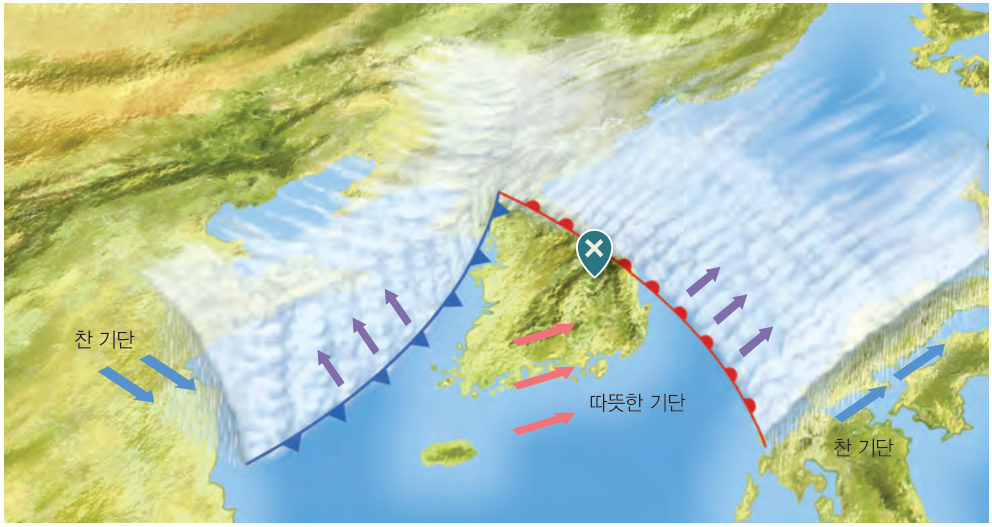
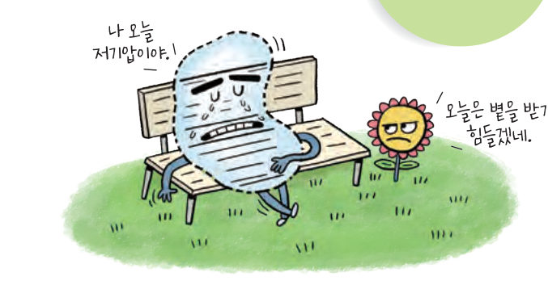
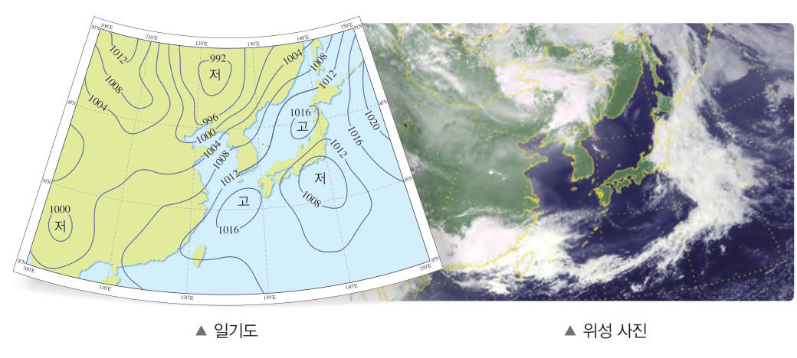
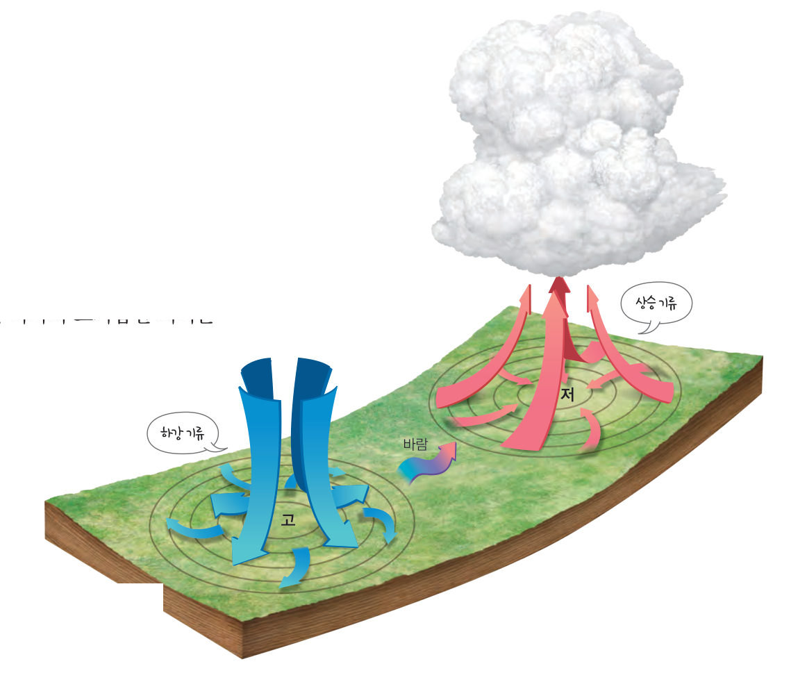
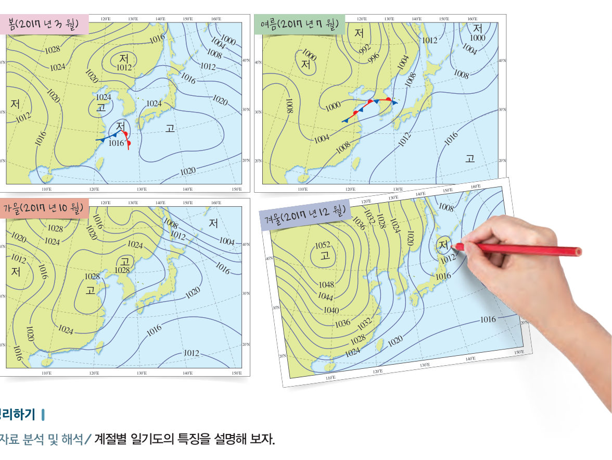
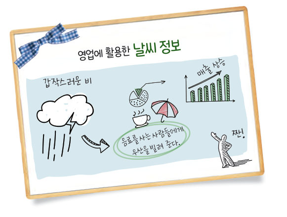
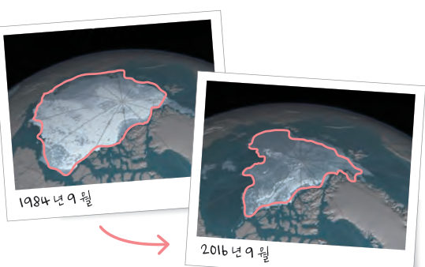

저기압일 때 날씨는 흐릴까? 위에서 본 바람과 옆에서 본 공기의 움직임으로 저기압과 고기압을 비교하고, 온대 저기압을 직접 지나가게 해 우리 마을의 날씨 변화를 예보해 보자. 계절별 일기도와 국제 협력으로 Ⅱ단원을 마무리하자.

날씨는 기단과 전선뿐만 아니라 기압 때문에도 변한다. 일기도에서는 기압이 같은 지점을 선으로 연결하여 나타내는데, 이러한 선을 등압선이라고 한다. 주위보다 기압이 낮은 곳을 저기압이라 하고, 주위보다 기압이 높은 곳을 고기압이라고 한다.
저기압에서는 바람이 주변에서 불어 들어오고 공기가 아래에서 위로 올라가는 상승 기류가 생긴다. 이때 상승하는 공기의 온도가 낮아져 공기 중의 수증기가 응결하여 구름이 생기고, 그 결과 날씨가 흐리거나 비나 눈이 내리기도 한다. 고기압에서는 바람이 주변으로 불어 나가고 공기가 위에서 아래로 내려오는 하강 기류가 생긴다. 이때 하강하는 공기의 온도가 높아져 구름이 생기지 않는다. 따라서 고기압인 지역은 날씨가 맑다.

| 바람이 시계 반대 방향으로 불어 들어온다. | |
| 하강 기류가 생겨 구름이 생기지 않고 날씨가 맑다. | |
| 상승 기류가 생겨 구름이 만들어지고 흐리거나 비가 온다. | |
| 바람이 시계 방향으로 불어 나간다. |
우리나라와 같은 중위도 지역에서는 북쪽의 찬 기단과 남쪽의 따뜻한 기단이 만나서 한랭 전선과 온난 전선이 함께 나타나는 온대 저기압이 자주 발생한다. 온대 저기압은 우리나라 부근에서는 서쪽에서 동쪽으로 이동하면서 통과하는 지역의 날씨를 변하게 한다.
| ① 온난 전선이 다가올 때 (전선 앞쪽) | |
| ② 온난 전선과 한랭 전선 사이 | |
| ③ 한랭 전선이 지나갈 때 (전선 뒤쪽) |

봄 건조하며, 이동성 고기압과 저기압이 자주 지나가면서 날씨가 자주 바뀐다. 황사나 꽃샘추위가 나타나기도 한다. 여름 초여름에는 많은 비가 내리고, 북태평양 기단의 세력이 커지면서 무더위와 열대야(최저 기온이 25 ℃ 이하로 내려가지 않는 밤)가 나타난다. 남고북저형의 기압 배치로 남동 계절풍이 분다. 여름과 초가을에는 태풍이 지나가기도 한다. 가을 북태평양 기단의 세력이 약해지고 이동성 고기압의 영향으로 맑은 하늘이 자주 나타나며, 낮과 밤의 기온 차가 커지면서 첫서리가 내린다. 겨울 시베리아 기단의 세력이 커져 춥고 건조하다. 서고동저형의 기압 배치로 북서 계절풍이 분다. 한파와 폭설 현상이 나타나기도 한다.
| 서고동저형 기압 배치, 북서 계절풍, 한파 | |
| 남고북저형 기압 배치, 남동 계절풍, 열대야 | |
| 이동성 고기압과 저기압이 자주 지나감, 황사, 꽃샘추위 | |
| 이동성 고기압의 영향으로 맑은 하늘, 큰 일교차, 첫서리 |
| 평가 기준 | 스스로 평가 |
|---|---|
| 탐구 기능 일기도에서 저기압, 고기압, 전선의 위치를 정확하게 확인하였는가? | |
| 인성 토의할 때 모둠 구성원의 의견을 존중하였는가? |

| ⑴ 1 기압은 약 1013 hPa이다. | |
| ⑵ 지표에서 높이 올라갈수록 기압이 낮아진다. | |
| ⑶ 기압 차이가 클수록 바람의 세기인 풍속이 빨라진다. | |
| ⑷ 해안에서 낮에는 주로 육풍이 불고, 밤에는 주로 해풍이 분다. |
| 평가 기준 | 스스로 평가 |
|---|---|
| 일기도를 활용하여 저기압, 고기압, 전선 등이 날씨에 미치는 영향을 설명할 수 있다. | |
| 계절별 일기도를 해석하여 날씨를 파악할 수 있다. |

최근 30여 년 동안 북극 지방 얼음의 분포 면적과 양이 줄어들고 있는데, 이는 지구 온난화 때문이다. 지구 온난화를 막으려면 화석 연료의 사용량을 줄이고, 친환경 에너지를 개발해야 한다. 아울러 국제 협력을 바탕으로 대기 중 온실 기체의 양을 줄이기 위한 노력이 필요하다.
1992 년 유엔 환경 개발 회의에서는 기후 변화 협약을 체결하였다. 1997 년에는 교토 의정서를 채택하여 온실 기체를 줄이기 위한 구체적인 목표를 정하였다. 2015 년 파리 신기후체제에서는 각국의 사정에 맞춰 온실 기체를 줄이는 방안을 자율적으로 정하고 그 이행을 국제 사회가 공동으로 검증하기로 약속하였다. 우리나라도 이러한 노력에 동참하고 있다.
| 기후 변화 협약 체결 (유엔 환경 개발 회의) | |
| 교토 의정서 채택 — 선진국 의무 강화, 배출권 거래 | |
| 파리 신기후체제 — 각국이 자율적으로 감축 방안 결정 |